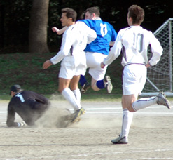
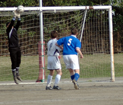
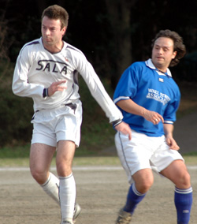
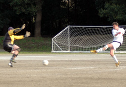

|
OiFuto, Sat 1st April. Controversy, controversy, controversy. While there was little of that in a terse encounter at Oifuto last Saturday, Sala and in particular TML linchpin Sid Lloyd (Age withheld) have been the subject of many a nasty rumour recently, founded no doubt over a jar or eighteen of premium strength imported lager in one or other of Tokyo’s more puritan nightspots.
Rumours relating to Sala’s ability to beat some teams and inability to beat certain others, have led to a Sid Lloyd/Sala/Hibs conspiracy theory that has recently only been rivalled by the Turkish newspaper which claimed that America caused the South-East Asian earthquake and subsequent tsunami by means of an underwater nuclear test gone wrong.
Sala are deeply hurt by such rumours and will certainly be bringing them to the fore during next week’s annual Sid Lloyd/Sala/Hibs League Rigging Conference to be held at Sala Bar (Dress: Smart/casual, 2000 yen entry, one free drink, riff-raff unwelcome)
Secondly, any team in the TML who claim not to have benefited from the faulty Navi systems provided free to the Swiss fleet, may file a claim with Mr Trotter himself at the address provided in last weeks YMCA match report.
Back to matters footballable… A cunning attempt at cosmetic surgery on -the Oifuto dirt pitch (sweeping it…) lent a positive air to the pre-game build up on Saturday (Slightly damaged by the sight of Lenny giving a young child an unprovoked roughhousing). This was complimented by watching the Swiss rip 10 men KGFC to shreds. A day for goals then…
The first half saw Jason starting in the midfield in place of the illiterate Shigeru who decided that whether or not the game was in Yokohama, that was where he was going. He enjoyed a cheeseburger and chips, a leisurely stroll, two sets of tennis, an end of lawn bowls and finished up by doing fifty laps of the pool and two belly flops before returning to Oifuto.
Sala started well in his absence though and it seemed that the determination and discipline witnessed in last weeks win over YMCA, had been preserved. Yet as night must inevitably follow day, Sala must inevitably play awfully at first, so that their mediocre play later in the game looks better than it is.
Guido’s pre-match instructions comfortably forgotten, Sala went about the business of losing the opening goal in vintage fashion. ‘Toblerone’ Beddingfield was dispossessed in the centre circle, but there seemed little threat as Geckoes moved forward.
They played a few nice passes eventually slipping a striker through. Guido appeared to have it covered, but was called off the scent by Sherlock Lloyd, who failed to close the case. Full credit though to the Gecko’s striker who clipped an excellent finish past the diving detective. The game was afoot…0v1.
Sala got progressively better towards half time, mainly because they couldn’t get any worse. Shigeru, on for Charles and fresh from his mixed doubles success, gave obvious drive to the midfield, and Dhugal carried over his fantastic performance in the air last week with another confident display. This was despite him heading wide a glorious chance from Lenny’s excellent cross.
Gallagher tried a few ‘fantasista’ spinning volleys and outrageous shots to the agitation of Charles (Just as well Brookey wasn’t there), Toby shot into the side netting from a tight angle and Shigeru appeared to be deliberately aiming his shots over or wide. In short, heads were held pretty low at the end of the half.
The half time team talk, normally not Shige’s strong point, was especially confusing for the tardy midfielder. Having nipped off to the toilet while he should have been running the line, he missed Gecko’s goal completely. Guido’s harsh tone didn’t fit with the apparent 0v0 scoreline, but Shigeru resolved the problem in his own way, by waiting until after the game to ask someone what the final score had been!
Sala found their collective feet in the second half, and there was little surprise that it was Shigeru who found a way through. To say that it was the worst goal of his whole career is perhaps cruel, but certainly true.
A ball from the right hit two Gecko shins and dropped to him on the edge of the box, but appearing to slip and be off balance he totally scuffed his shot. Fortunately the Gecko’s keeper was also off balance and also slipped. The shot bumped its way, via the despairing keepers hand, into the net. Had any defender actually thought about it, they could well have run after the ball and overhauled it before it got there. 1v1.
Five minutes later Sala got another goal with an element of fortune. Shigeru’s pass wide to Jason on the right hand side of the box, saw the midfielder chip the ball over the keeper. Cross or shot? Who cares! Jason certainly gets the benefit of the doubt for being in the right place at the right time and for securing an important win for Sala. 2v1.
In all fairness Sala should have got a couple more towards the end as Gecko’s seemed to tire. Dhugal’s mazy run let in newcomer James, but he just let it get away from him and Charles’ weak follow up was easily blocked.
Dhugal, Toby and Shigeru combined well in the later stages to create a few more chances but the final touch was missing.
In the last few seconds, Gecko’s shocked Sid when a hopeful lob/cross landed on top of the bar, but it wasn’t to be.
As the final whistle blew, some sakura drifted lazily through the air, providing a rare moment of beauty in an otherwise grim world.
Sleep tight.
Match reporter: Roddy Charles
|